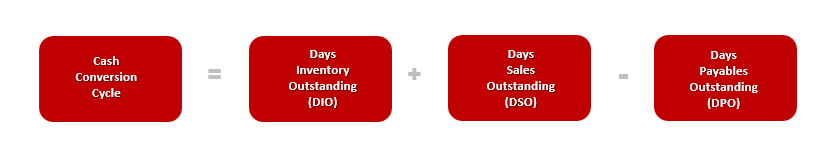
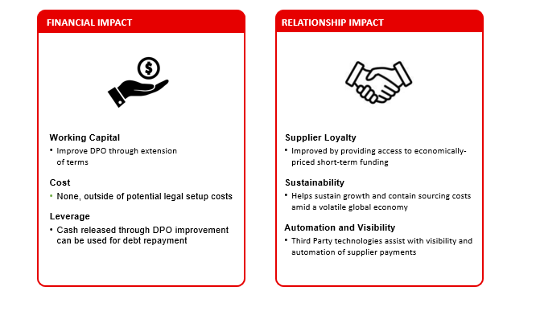
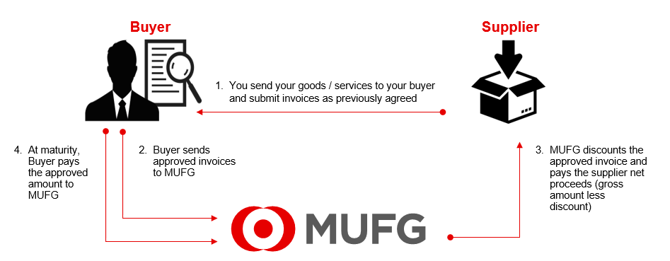
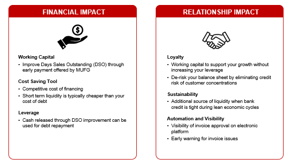

Today both buyers and suppliers look to contain costs in their supply chain, improve working capital and free up liquidity in their cash conversion cycle.

Companies look to improve working capital by increasing or decreasing one of the levers in the cash conversion cycle equation. Some buyers may look to minimize DIO and DSO by discounting their receivables, or increase DPO by holding onto cash longer and extending payment terms.
Many suppliers look to accommodate their buyers without causing an impact on their cash flows and need access to economically priced short-term funding.
No matter where you are or want to go with your cash conversion cycle, the strategic importance of financially sound buyers, customers and suppliers has an impact on working capital.
Buyers launch Supply Chain Finance programs that have both a financial and relationship impact

Here’s a high-level overview to help you understand how supply chain finance works at MUFG

Suppliers join Supply Chain Finance programs to benefit from both a financial and relationship impact as well.

Why choose MUFG Supply Chain Finance?
Suppliers choose the MUFG Supply Chain Finance program for reasons including:
How is the discount fee to purchase my receivables determined?
MUFG determines the discount fee based on the invoice amount, the period the receivable will be outstanding, and the MUFG price. The MUFG price is comprised of a base rate, such as LIBOR, plus a margin.
How long does it take to enroll in the MUFG Supply Chain Finance program?
You will need to complete the Receivables Purchase Agreement, Setup form and Certificate of Incumbency and submit the required bank Know Your Customer information and verification documents.
Once MUFG has received all of the required forms and agreements, information, and documents, we will endeavor to have you up and running, with full access to the system in a timely manner.
How will I know when I have been approved and can access the system?
We will welcome you via email when you have been approved. Your welcome email will include your User ID and instructions for accessing the system. Please NOTE that, for security reasons, your password will be separately emailed.
When will I start to receive payments?
You would begin to receive payments after you have been notified that you have completed submission of all MUFG-required documentation and been approved for the SCF program, and providing eligible invoices were approved by your Buyer for payment.
What documents are required?
For questions during the onboarding process, who do I contact?
For assistance during the onboarding process, please reach out SCFsupport@us.mufg.jp
What if I sign up and then change my mind?
According to the terms of our contract, you may terminate your participation in the MUFG Supply Chain Finance program at any time by providing 30 days’ written notice.
Do I need to have an MUFG bank account to participate in the MUFG Supply Chain Finance program?
No, an MUFG bank account is not required to participate in the MUFG Supply Chain Finance program. Funds will be deposited into your existing bank account. However, you will be required to provide your current banking information and verification documents during the enrollment process.
However, if your banking information changes during the time you are participating in the MUFG SCF program, you will be required to submit new banking information and verification documents.